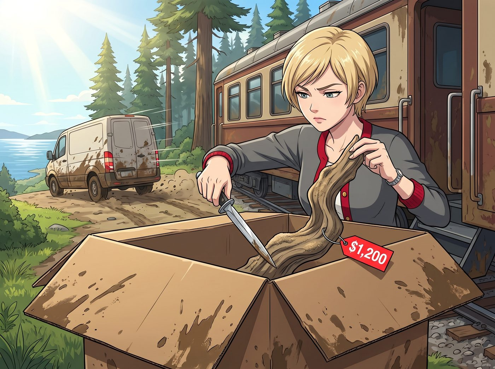

天使的仇恨值

「叭——叭——」
普吉特海灣的寧靜午後，被一陣快遞貨車的引擎聲打破。一個滿身泥點的快遞員，把一個巨大的牛皮紙箱卸在了二號車廂的門口，按了兩下喇叭就揚長而去。
彼時，Lily 正在工作站前欣賞她那份零資產價值、但提供了三日快樂的「莫哈韋沙漠地契」，而 Victoria 則端著一杯手沖咖啡，正準備享受她優雅的下午茶時光。
「算那隻藍毛猴子還有點良心，知道在揮霍前給我們寄點加州的貢品。」
Victoria 高傲地走過去，用一把精緻的銀色裁紙刀劃開了紙箱。
箱子裡有兩個獨立包裝的禮盒。Victoria 毫不客氣地先拆開了寫著自己名字的那個狹長盒子。
「讓我看看，是比佛利山莊的高定絲巾，還是羅迪歐大道的……」
Victoria 的聲音戛然而止。
她從高級的防撞天鵝絨裡，用兩根手指，嫌棄地拎出了一根造型扭曲、散發著淡淡海腥味、邊緣還沾著沙子的……破樹枝。
樹枝上掛著一個浮誇的標籤：「脈輪淨化·大蘇爾原生漂流木 —— $1,200」。
「這是一根……柴火？」
Victoria 的臉色瞬間由白轉紅，再由紅轉青。她那老錢家族的優雅DNA遭受了毀滅性的打擊。「一千兩百美金的破木頭？！Chloe 那個文盲是在羞辱我的智商，還是在羞辱整個現代藝術史？！我要把這根破木頭塞進她那輛猛禽皮卡的排氣管裡——！！！」
就在 Victoria 準備發動名媛最高級別的毒舌狂暴時，旁邊傳來了一陣令人毛骨悚然的、死一般的寂靜。
Victoria 轉過頭。
Kate 剛剛拆開了屬於她的那個禮物盒。
桌面上，赫然立著一個穿著夏威夷印花衝浪褲、腳踩衝浪板、正對著所有人比出「放輕鬆（Hang Loose）」手勢的——搖頭衝浪耶穌。
隨著車廂裡微弱的空調風，那個耶穌娃娃的腦袋還在歡快地左右搖擺。
在二號車廂裡，有兩條不成文的鐵律：
第一，永遠不要去查 Lily 的帳本。
第二，絕對、永遠、千萬不要惹 Kate 真正生氣。
平時的 Kate 就像個溫柔的天使，會包容所有人的缺點。但正因為如此，當天使真的生氣時，那種威壓是毀滅性的。
此時的 Kate，沒有大吼大叫，也沒有掉眼淚。
她只是安靜地站在桌邊，嘴角的溫柔笑容完全消失了。她那雙平時總是充滿慈愛與包容的眼睛，此刻就像兩口深不見底的古井，死死盯著那個還在搖頭晃腦的衝浪耶穌。
車廂裡的溫度彷彿瞬間下降了五度。一種名為「聖潔的怨念（Holy Wrath）」的氣場，正以 Kate 為中心，呈放射狀向四周擴散。
「Kate……妳……妳還好嗎？」Victoria 嚥了一口唾沫。
Kate 沒有回答。她緩緩抬起頭，目光落在了 Victoria 身上。那眼神裡沒有憤怒，只有一種讓人靈魂深處感到戰慄的「平靜的失望」。
警報！致命警報！
Victoria 的大腦瞬間瘋狂報警。
在平時的 MMO（大型多人在線遊戲）組隊邏輯裡，Chloe 是營地裡的「主坦克（Main Tank）」，專門負責拉仇恨和承受傷害；Max 是「輔助（Support）」，負責調和氣氛。
但現在！那兩個搞事的傢伙在兩千公里外的加州海灘上逍遙法外！
而她，Victoria Chase，一個身嬌肉貴的「脆皮法師」，此刻正面臨著 Boss 級別的怨念鎖定！
「該死！Chloe 妳個王八蛋！妳自己惹了神明，卻把這顆定時炸彈空投到我面前？！」
Victoria 在心裡崩潰地尖叫。
眼看著 Kate 緩緩伸出手，似乎準備拿起那個耶穌娃娃，Victoria 知道，一旦 Kate 真的開始念誦驅魔聖經，接下來的一整個月，車廂裡都不會有好日子過了。
「等等！Kate！冷靜！這一定不是全部！」
Victoria 爆發出了此生最快的反應速度。她像一隻發瘋的土撥鼠一樣，猛地撲向那個巨大的牛皮紙箱，雙手在厚厚的防撞泡沫球裡瘋狂扒拉。
「Chloe 雖然是個沒品味的混混，但 Max 不是！Max 一定有留下什麼緩衝機制！一定有！」
Victoria 華麗的美甲都被泡沫球刮花了，終於，她的指尖觸碰到了一個冰冷、精緻的小玻璃瓶。
她像舉著免死金牌一樣，猛地將那個小瓶子從箱底舉了出來，高高舉過頭頂，擋在自己和 Kate 之間。
「看！Kate！看這個！！」Victoria 的聲音因為恐懼和激動而破音了。
那是一小瓶包裝極其考究的深色液體。瓶身上的燙金標籤在燈光下閃閃發亮：
『加州陽光沐浴·手工授粉·零碳排放——頂級有機馬達加斯加香草莢精粹』。
那種極致的純淨感和烘焙界「液體黃金」的氣息，瞬間穿透了車廂裡的低氣壓。
Kate 伸向衝浪耶穌的手，硬生生地停在了半空中。
她轉過頭，目光落在那瓶價值三百美元的頂級香草精上。
原本死寂、充滿怨念的眼神，在看清標籤上的「手工授粉」和「零碳排放」後，開始發生了奇妙的化學反應。怒氣值就像被拔了塞子的浴缸，以肉眼可見的速度瘋狂流失。
「這……這是給我的嗎？」Kate 眨了眨眼睛，聲音恢復了原本的柔軟和一絲驚喜。
「當然！這絕對是給妳的！」
Victoria 像獻寶一樣，雙手將香草精恭恭敬敬地遞到 Kate 手裡，同時大腦飛速運轉，為 Chloe 的褻瀆行為瘋狂洗白：「妳聽我說，Kate。這個……這個娃娃，其實是有典故的！加州真的有衝浪者自己的教會，他們在海灘上做禮拜，還在浪板上受洗！對，衝浪代表著乘風破浪戰勝困難，『Hang Loose』代表著主賜予我們的內心平靜！這是一種……呃……後現代本土化的宗教融合藝術！而這瓶香草精，才是她們真正為妳準備的供奉……啊不，禮物！」
Kate 捧著那瓶頂級香草精，輕輕打開瓶蓋嗅了一下。那股濃郁、溫暖、純粹的香草芬芳，瞬間徹底驅散了車廂裡的陰霾。
「天哪，這品質太完美了……」Kate 臉上終於重新綻放出了天使般的笑容，她甚至有些不好意思地看了一眼那個衝浪耶穌，「原來是這樣……我剛才差點誤會她們了。那我今晚就用這個給你們烤焦糖布丁好不好？」
「太好了！布丁萬歲！讚美上帝！」Victoria 虛脫地靠在桌子上，大口大口地喘著粗氣，後背的真絲睡袍已經被冷汗完全浸透了。
工作站後方，全程目睹了這場「仇恨轉移與極限拆彈」的 Lily，默默地喝了一口熱牛奶，推了推圓框眼鏡。
她沒有舉起相機，但她在系統日誌裡默默敲下了一行備註：
『規則第 77 條：當「肉盾」不在場時，絕對不要讓天使暴走。以及，Victoria 學姐在面對生命威脅時，其臨場危機公關與詭辯能力，已經達到了聯邦參議員的級別。』
那天深夜，車廂裡的燈都熄了。
Lily 起來倒水的時候，看見客廳角落還亮著一盞小檯燈。Victoria 穿著睡袍，盤腿坐在地毯上，面前擺著一個她從自己衣帽間裡翻出來的黑色小底座。那根一千兩百美元的破樹枝，已經被穩穩地立在了上面。
Victoria 歪著頭，換了三個角度端詳它，又把檯燈的燈頭往左轉了一點，讓光斜斜地擦過那道被海水沖刷出來的裂紋。
「只是因為它標價一千兩百。」她對著空氣小聲嘟囔，「不是因為它好看。」
Lily 什麼都沒說，端著水杯，悄悄回了房間。